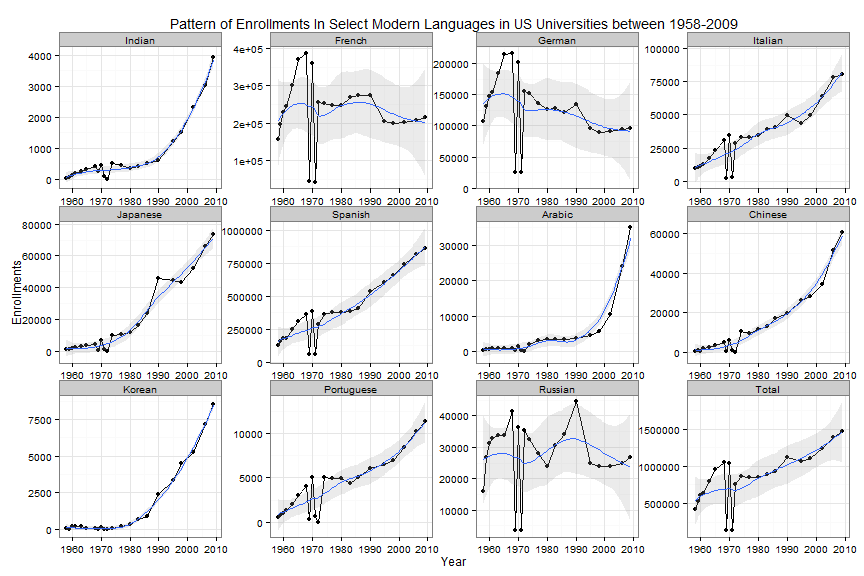

This is an extension of a recent blog post published by Vivek Patil on Modern Languages Enrollments in the US. Using data from MLA surveys of enrollments in institutions of US higher education between 1983 and 2009, he found that enrollments in Indian languages were low, compared to enrollments in 10 other languages, besides English. These 10 languages were French, German, Italian, Japanese, Spanish, Arabic, Chinese, Korean, Portuguese, and Russian. In this extension, we use data from 22 survey years since 1958, the first year for which the modern languages enrollment database provides data, to study the pattern and number of students enrolling in these 11 languages.
Why is a knowledge of different languages important and what is the general perception of current trends? Kathleen Stein-Smith noted in 2013 in the Language Magazine that there was a foreign language deficit in the US. A similar sentiment was echoed by the Global Language Project. Both noted that knowing languages could help one understand foreign cultures in better ways and could provide advantages in international relations and international business.
Enrollment data for US higher education institutions were collected for 22 survey years between 1958 and 2009 for 11 different languages. These include 1958-1961, 1963, 1965, 1968-1972, 1974, 1977, 1980, 1983, 1986, 1990, 1995, 1998, 2002, 2006, and 2009. For determining enrollment figures for Indian languages, a sum of enrollments for Bengali, Gujarati, Hindi, Hindi-Urdu, Kannada, Malayalam, Marathi, Punjabi, Tamil, Telugu, and Urdu was taken. This was consistent with the procedure Alyssa Ayres used in a recent article in Forbes. For more information on the enrollment data, assumptions in certain surveys and limitations associated with specific surveys and years, please see here and here. One point to remember is that in 1969 and 1971, enrollment numbers were for summer instead of the fall.

Besides French, German, and Russian, interest in other languages studied in this article is on a rise. Total enrollments in this set of 11 languages are also rising. Please note that the population of the US jumped a little more than 1.75 times between 1958 and 2009. [It was approximately 174.88 million in 1958 and about 307 million in 2009.]
The 2009 MLA survey report mentioned that Spanish, German and French (in that order) were the three most popular languages. The graph shown below indicates that Spanish, French, and German were the top three languages (among the languages being considered for this article) from the very beginning of the MLA database in 1958. In fact, among the 11 languages being studied, German has been a perennial third, whereas French was ahead of Spanish until 1969. In 1969, Spanish took over as the number one language of study. This graph also suggests that since the survey in 1986, enrollments in Spanish grew tremendously. Could it be that the growth in total enrollments is being driven primarily by the growth in enrollments in Spanish?
The interactive chart shown below begins with a comparison of the total enrollments in 11 languages (upper line) being studied here with the total enrollments in 10 languages, after dropping Spanish (lower line). Hovering over the chart can provide information on the value during a particular year. The chart suggests that after dropping Spanish, total enrollments in the remaining 10 languages appear to be increasing at a sluggish pace. In fact, total enrollment numbers (without Spanish) are still lower than they were in 1965 or 1968, when the overall US population was substantially lower than it is now.
Clicking on a dot/circle of the legend can make that language appear/disappear from the plot. This can help with the comparison of enrollments between languages. It should be possible to plot patterns for all languages in this chart, if one so desired.
Graphs and Charts were generated using ggplot2 and rCharts in the R environment. Data and the relevant code for replicating this analysis can be found on github.